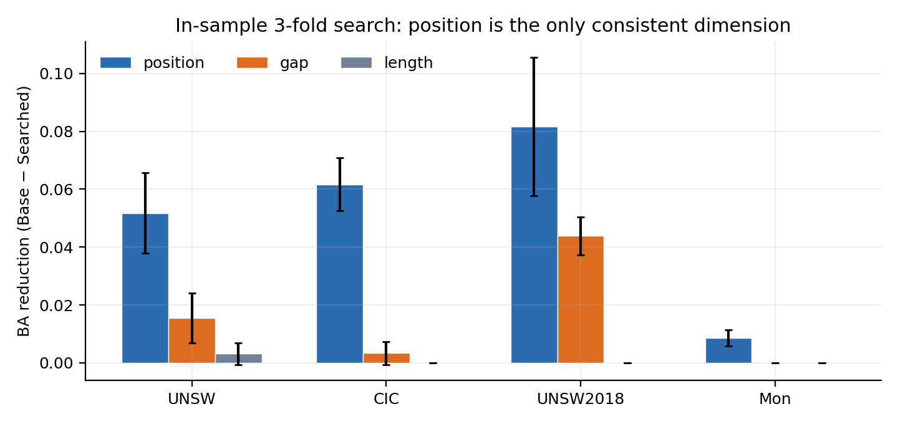
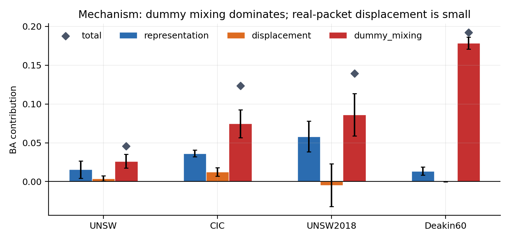

给导师的四个答案
核心问题：在相同通信预算与逐日标签到达规则下，持续刷新合法扰动分布，能否让持续学习的设备指纹攻击者反复付出适应成本？已有静态扰动主要检验一次变换后的识别下降；这里进一步评价攻击者持续更新后的全期 Post BA。
以上均为已参与研究判断的开发回放。UNSW8 采用 150 观测日，Deakin10 采用 50 观测日；不同数据集的绝对 BA 不直接比较。完整配对口径见下方实验档案。
实际实现：双时间尺度 Full New5
防御端从可信设备身份取得类别 Y。慢层每 5 个观测日随机刷新一套合法码本；快层对每条流独立、均匀抽取一个 Mapping State。State 是类别到 Code 的置换，六个 State 不是六套独立 Trigger 参数。
防御者在线不观察攻击者模型、识别 BA 或 Blind 标签。上述流程是特征级回放；类别身份来源与实网可实现性仍需部署验证。
最有说服力的实验发现
同预算的动态刷新
UNSW8 累计 LR：固定码本 + IID 为 0.8054，Full New5 为 0.7683。位置刷新贡献了 LR 收益的大部分；Deakin 累计 RF 中 Full New5 比 Position5 另低约 0.0252 BA，说明长度与 Gap 的增量具有模型依赖性。
稳定结论的边界
固定六 State 的概率调度没有稳定的全期增益；已测学习型排序、历史感知选择与联合控制也未建立可靠优势。当前保留固定码本 + IID、Position5 与 Full New5 三个可解释基线。
主比较使用相同原始流、时间划分、Blind 与标签到达规则；各表仍有数据集、模型和实际开销的限定。组件明细 · 跨数据集开发回放
关键反证：换一种攻击表示，身份仍可识别
冻结 Full New5 与在线协议，只改变攻击者读到的防御后可观测特征。UNSW8 累计 RF 中，顺序无关视图 C 汇总下行包长、大包与事件规模；它不读取真实包标记、真实 State 或精确位置。
解释：原序列攻击器受到动态扰动，但另一个可观测表示仍能识别设备。Deakin 累计 RF 的 C 为 0.5561、D 为 0.5730，不能把 UNSW8 的下行主导解释直接推广到别的数据集。
BA(C_clean) 与 BA(C_FullNew5)。当前证明了防御后残余信息足以支持识别，尚未直接量化 Full New5 对 C 视图的抑制幅度，也未证明预算内无法进一步改善。完整 A–D 视图与逐日结果；详细的动作权限分析保留在下方实验档案。
请导师决定的下一步
当前已完成动态码本调度、更新周期、State 数量、组件消融及学习型选择的开发性验证。证据支持固定预算下的随机动态刷新能够干扰部分持续学习攻击者，同时显示顺序无关特征仍保留显著识别能力。
建议：暂时停止码本调度与 PPO 优化，把下一阶段重点放在真实流量残余信息与防御动作权限的关系。优先冻结隔离捕获与攻击协议，补齐 C_clean 对 C_FullNew5 的配对比较，再判断是否需要设计新的防御操作。
需要导师判断的是：在既定研究周期与部署约束下，是否启动改变残余信息的新机制；如要继续，允许调整哪些真实包和下行特征？
展开实验档案、协议与复现索引 保留完整实验表和失败修正记录
研究演进：每一阶段解决了什么
下表按实际研究推进的先后排列；以下实验档案沿用这一顺序。实验日期与流量日期不是同一概念，未记录的实施日期不作补写。
| 顺序 | 问题与实验 | 得到的证据 | 下一步为何发生 |
|---|---|---|---|
| 1 | 等成本位置／长度／Gap搜索；真实包与dummy分解 | 位置维度值得研究，早期已发现包长直方图残余 | 拆分Trigger、Weakener与位置效应 |
| 2 | Placebo、类内位置池、Oracle逆变换 | 静态位置可学习，映射改变产生可恢复的表示失配 | 研究未知State时的适应成本 |
| 3 | Periodic／Per-flow；统一权限配对 | 共享State易恢复，逐流推断限制当前逆变换攻击 | 转向真正随时间变化的防御 |
| 4 | 固定库非平稳调度→新码本→逐流IID | 单换混合概率没有稳定长期增益；新码本+逐流随机对部分攻击有效 | 跨数据集、历史价值及可学习选择 |
| 5 | Deakin验证；历史替代与边际价值；静态／历史条件选择 | 旧标签相对价值下降；尚无可靠可迁移选择信号 | 回到简单更新规则与组件 |
| 6 | 5/10/25/50周期、复用、组件、RF/MLP、联合控制 | 5日成为既有参照，Position5不能普遍替代Full | 检验State数、差异生成与更短周期 |
| 7 | K_state=3/6/12、Novelty、1/2日、可观测残余视图 | 细调无统一优势，无序统计保留较强识别信息 | 冻结码本优化，限定防御安全主张 |
| 8 | T2_W1 vs T1_W3小支线 | 单Seed结果随数据和视图变化，UNSW无序泄漏仍高 | 保留探索记录，不恢复配比搜索 |
阅读路线：二为协议；三至四为早期机制；五至六为动态防御及历史解释；七至十为优化与否证；十一为最新残余诊断；T2支线独立置于附录；十二给出最终主张与审稿边界。
统一定义、威胁模型与评价协议
2.1 防御的实际操作与权限
输入为前32个真实事件；当前方法仅对上行真实包做有限 padding 和增量延迟，插入上行 dummy，保持真实包方向和相对顺序，最后取前32个输出事件。截断是攻击者观察窗口的裁剪，不是网络丢包。下行真实包长度不被padding，插入事件仍可能改变其可见覆盖。
T表示Trigger对数。标准T1_W3为两Trigger包加三Weakener包；硬上限630 B／1.5 s／最多6 dummy，标准分账Trigger 283 B／0.45 s、Weakener 347 B／1.05 s。预算上限不等于实际开销；已做实际成本配对的实验在各自记录中注明，T2_W1仅等上限。
防御者按类别选择码字，实验假设部署端可由可信设备身份确定类别；尚未验证身份未知或共享网关条件下的可实现性。在线防御不读取攻击者模型、当前BA或Blind标签。流量重放属于特征级模拟，未证明端到端网络部署效果。
2.2 名词避免混用
| 名词 | 本报告中的定义 |
|---|---|
| 码本 | 每个code的Trigger位置、长度与Gap组合；生成新码本会改变这些参数 |
| Mapping State | 类别到code的置换；六个State不是六个设备类别，也不是六套新码本 |
| Fixed Mapping | 早期统一配对中的长期共享单一State |
| 固定码本 + IID | 后期Fixed基线：保留首套码本，每条流仍独立抽State；与Fixed Mapping不同 |
位置池大小 k_pos | 早期每类可用位置对数1/2/4/8；与后期State数量 K_state=3/6/12不同 |
| Full New5 / Position5 | 每5个观测日更新全码本／只更新位置，均保持K_state=6均匀逐流IID |
2.3 攻击者信息权限
普通在线攻击器读取防御后32个带方向包长与32个log Gap，仅用已到达的设备标签更新。真实State标签、内部role和真实包索引不可作为普通攻击输入。Oracle逆变换和历史监督State分类器为特权诊断，单独标注；Oracle受重构和分类器限制，是参考性能而非理论上界。
2.4 两类协议不可混表
| 协议 | 训练与评分 | 统计口径 |
|---|---|---|
| 早期机制／块级适应 | capture或时间块划分；当块Calibration先于Blind；标签预算、类别支持按原实验 | 原表保留自身划分；部分有按天配对bootstrap；不能与在线J直接比较 |
| 在线UNSW8开发 | 20观测日热身抽4000标签；随后150观测日，2016-10-20至2017-04-12；17259 Blind | 每日8新标签、最多128 Blind；三Seed共用日期与样本清单 |
| 在线Deakin10开发 | 按实际UTC重建时间，排除6条跨午夜流；20观测日热身4000标签；50观测日，2023-07-10至09-03；6400 Blind | 400个在线新标签，热身覆盖7类；不是全新最终测试 |
每天先用严格早于当日的标签训练并评分当日Blind，再释放当日8个Calibration标签。Post是使用此前已到达标签的每日模型，不包含当天新标签；Pre在每个调度段首日拟合后整段冻结。Blind标签只用于评分或事后诊断。滑动窗按前14个日历日取标签，样本不足两类时回退热身模型并记录；码本周期按观测日计。
在线LR：StandardScaler仅拟合热身特征，LogisticRegression最多500迭代、seed=0。RF：64树、深度12、叶节点最少2、seed=7500。Deakin MLP为64/32隐层、固定30轮，仅作补充压力测试；早期机制实验的模型参数以原记录为准。
2.5 主指标、配对与不确定性
每日BA对当日Blind实际出现的设备类等权，历史未知类计零召回。JH为H个观测日BA的等权平均，再对配对Seed等权；不是所有流合并后的BA，也不要求各日出现同一类集合。相同日期跨臂使用相同原始流，因此跨臂差值配对有效，跨日期曲线仍受类别集合变化影响。J150与J50分别报告。
在线主表是描述性均值，未统一执行显著性／等效性检验。三Seed不等于三套独立设备捕获；未提供CI的表不作“显著”宣称。切换冲击、前三日BA、T0.70、State准确率与历史价值是辅助诊断；阈值可能有天花板效应，低固定预算BA不能直接解释为适应时间延长。State RNG与样本划分分离；早期受Calibration split影响的A–F绝对BA只在同run内比较。
来源：在线时间边界审计。主文保留关键结果，逐日、逐块及逐 Seed 明细见链接。
来源：块级权限与配对审计。主文保留关键结果，逐日、逐块及逐 Seed 明细见链接。
来源：UTC清单与开发数据边界。主文保留关键结果，逐日、逐块及逐 Seed 明细见链接。
早期机制：组件效果与表示失配
3.1 等成本单组件搜索与早期包长残余
我们先固定总预算，只改变一个组件，比较攻击者 BA 的变化。这个阶段的目标不是找“最强攻击”，而是判断哪个设计维度值得继续投入。
| 组件 | UNSW | CIC | UNSW2018 | Mon |
|---|---|---|---|---|
| 位置搜索 ΔBA | 0.052 | 0.062 | 0.082 | 0.009 |
| 长度搜索 ΔBA | 0.003 | — | — | — |
| gap 搜索 ΔBA | 0.016 | 0.003 | 0.044 | — |

进一步把总效应拆成 representation、displacement、dummy mixing：

3.2 Trigger／Weakener与Placebo对照
Stage A 固定 5 个 dummy 事件，比较两种分配：
| 设置 | 组成 | UNSW LR | CIC LR |
|---|---|---|---|
| T1_W3 | 2 个 trigger + 3 个 weakener | 0.261 | 0.138 |
| T0_W5 | 0 个 trigger + 5 个 weakener | 0.967 | 0.722 |
同样 5 个事件、同样约 630 B，trigger 的存在带来巨大差异。这说明“trigger 层”值得研究。
但这里有一个明显的混淆：T1 与 T0 不只差 code，还差位置、事件结构和预算分配。于是我们继续拆。
是 trigger code 本身有用吗？
我们做了一个 Placebo：同样 2 个 trigger 事件、同样类相关位置和预算，但所有类别共享同一个长度 code。原记录中的“无 mapping rotation”针对 code 内容映射；位置投放仍被保留。
| 数据集 | Real − Placebo（LR） | RF | MLP |
|---|---|---|---|
| UNSW | −0.002 | −0.053 | −0.034 |
| CIC | 0.000 | −0.007 | −0.006 |
3.3 位置关联与映射切换
由于 code 内容的联合差异较小，我们继续单独控制类—位置关联与位置映射切换。这里有两个容易混淆的对照：
对照 1：去掉“位置与类别的关联”
保持 2 个 trigger 事件、同样预算，但把位置改成与类别无关的随机位置。防御几乎消失。
这支持类别相关位置是该协议中产生较大降幅的重要条件。但还不能说明它是“静态可学习的位置”，还是“被 rotation 打乱的位置”。
对照 2：保留类位置，但不做 rotation
| 数据集 | 静态类位置（无 rotation） | 类位置 + rotation | 随机位置 |
|---|---|---|---|
| UNSW RF | 0.997 | 0.405 | 0.999 |
| CIC RF | 0.993 | 0.057 | 0.830 |
3.4 类内位置池稳定性（k_pos）
K 表示每个类别可用的位置对数量：K=1 是固定位置；K 越大，同一类别内部位置越随机。事件数与预算固定，并做位移分层及对齐审计；不能将位置随机化与其他协议下的Per-flow状态随机化等同。
| K | CIC RF | UNSW RF |
|---|---|---|
| 1（固定） | 0.057 | 0.405 |
| 2 | 0.368 | 0.889 |
| 4 | 0.592 | 0.954 |
| 8 | 0.771 | 0.989 |
本表中位置池增大伴随BA升高；分布形状可学习是一种解释，尚非该表单独识别的因果机制。
3.5 当时已出现的残余线索
UNSW早期顺序无关包长直方图的clean→clean BA为0.9768、防御后训练→防御后测试为0.9636；真实包视图为0.9696。真实包视图使用内部角色标记，仅作诊断，全事件直方图才符合普通观测。早期padding审计约41 B/流、约4%真实事件变长；这些数值限于当时样本，不能直接替代后期在线结论。
来源：完整协议与结果。主文保留关键结果，逐日、逐块及逐 Seed 明细见链接。
来源：完整协议与结果。主文保留关键结果，逐日、逐块及逐 Seed 明细见链接。
来源：完整协议与结果。主文保留关键结果，逐日、逐块及逐 Seed 明细见链接。
映射适应：可恢复性、标签权限与统一配对
4.1 已知映射的可恢复性（特权参考）
要判断 rotation 是“信息被破坏”还是“映射被换掉”，最直接的办法是给攻击者真实 mapping，让它做逆变换，然后看能否恢复。
我们实现了 feature-level canonicalization：按当前 mapping 把 trigger 的 code 和位置移回参考映射，再训练分类器。
| 条件 | UNSW LR | CIC LR |
|---|---|---|
| 不逆变换 | 0.706 | 0.585 |
| 只还原 code | 0.711 | — |
| 只还原位置 | 0.877 | 0.915 |
| code + 位置（combined） | 0.884 | 0.922 |
| Oracle 特征重建 | 0.880 | 0.923 |
跨数据集与分类器
| 设置 | 不逆变换 | 只还原位置 | combined |
|---|---|---|---|
| CIC / LR | 0.585 | 0.915 | 0.922 |
| UNSW / RF | 0.868 | 0.910 | 0.962 |
| CIC / RF | 0.694 | 0.970 | 0.991 |
| UNSW / MLP | 0.838 | 0.957 | 0.958 |
LR/MLP 下，只还原位置几乎就足够；RF 在 UNSW 上更依赖 code+位置组合，但在 CIC 上位置已足够。因此“RF 需要 combined”是数据集相关，不是模型固有属性。
4.2 Periodic的块级适应与类别覆盖
上面是“已知 mapping”的上界。现实中攻击者不知道当前 mapping，必须从流量里推断。这里的关键区别是：
- Periodic：一个 block 共享一个 state，可以用 block 内少量标签识别；
- Per-flow：每条 flow 独立 state，block 标签不能直接迁移。
Periodic：用标签做 state selection
我们枚举 6 个候选 state，对每个 state 做 canonicalization，用冻结历史模型的 log-loss 选 state；Probe 与 Finetune 共享同一个 state 与 canonical features。
| 指标 | 结果 |
|---|---|
| Selector Top-1 | 65 / 66 |
| n=256 Top-1 | 18 / 18 |
| n=1024 Top-1 | 47 / 48 |
| n=64 | 不可评估（类别覆盖不足） |
Finetune 平均优于 Probe，但差异很大一部分来自类别覆盖：
| n | Probe Full | Probe Common | Finetune Full | Finetune Common |
|---|---|---|---|---|
| 256 | 0.577 | 0.999 | 0.872 | 0.900 |
| 1024 | 0.801 | 0.980 | 0.916 | 0.946 |
4.3 Per-flow监督推断与概率融合
以下A–F采用历史真实State监督，属于特权攻击诊断；与后面的仅设备标签主比较分开。早期No-canon 0.546与本run 0.578受State RNG变化影响，不跨run计算增益。
Per-flow 下每条 flow 独立随机 state。攻击者不能用一个 block 级标签确定共享 state，只能逐条 flow 推断。
单流 state 可识别吗？
| 方法 | State Top-1 | State Top-2 |
|---|---|---|
| 6 类随机猜测 | 0.167 | 0.333 |
| 只看单流可观测特征 | 0.149–0.180 | — |
| 历史监督 state classifier | 0.458 | 0.666 |
| Oracle | 1.000 | 1.000 |
早期无监督观测评分接近随机；另一个获得历史真实State监督的分类器达到Top-1 0.458。二者信息权限不同，不能表述成可观测流量一般不含State信号。
下游设备分类：不同 state 推断策略
| 攻击者 | Device BA | 相对 No-canon |
|---|---|---|
| No-canonicalization | 0.578 | — |
| Predicted Top-1 | 0.565 | −0.014 |
| Top-2 fusion | 0.605 | +0.027 |
| Top-6 marginalization | 0.658 | +0.079 |
| 置信度门控 | 0.587 | +0.008 |
| Oracle state | 0.831 | +0.253 |
关键现象：
注：Per-flow 数值来自同一组 A–F 消融运行；由于 state 抽样与校准切分，绝对 BA 与更早的 pilot 会略有差异。所有相对结论都使用同一 run 内的配对比较。
- Top-1 错误 state 会破坏设备识别：正确 state 的 flow 平均 BA 0.850，错误 state 只有 0.440；
- 因此硬选 Top-1 平均反而低于不逆变换；
- 保留更多候选（Top-6）最稳，但也只恢复约 31% 的 oracle 增益；
- 门控阈值从历史数据迁移后覆盖率只有 12–33%，大多数 flow 回退到 No-canon，收益接近 0。
4.4 统一权限主比较：仅设备标签
UNSW8单Seed，八个20观测日块；每块最多1024个Calibration和1000个后续Blind，共8000 Blind。三Policy共享原始流和参考LR；Fixed长期共享State、Periodic每两块共享State、Per-flow独立抽State。真实State不参与Adaptive训练，Oracle额外获得真实State。主BA对每块出现类等权后块均值，部分历史未见类计零召回。
| Policy | No-canon | Adaptive | Oracle参考 | Adaptive增益 | Oracle−Adaptive | 增益恢复比 |
|---|---|---|---|---|---|---|
| Fixed Mapping | 0.178 | 0.517 | 0.517 | +0.339 | 0.000 | 100.0% |
| Periodic | 0.291 | 0.550 | 0.550 | +0.259 | 0.000 | 100.0% |
| Per-flow | 0.312 | 0.442 | 0.539 | +0.130 | 0.096 | 57.5% |
Fixed/Periodic在当前标签预算下达到其Oracle参考，Per-flow仍有差距。这是策略结构与对应适应算法的联合结果，不能将差值全归因为State推断。表内由未四舍五入数计算增益与恢复比；不与上面的A–F绝对值混用。
来源：完整协议与结果。主文保留关键结果，逐日、逐块及逐 Seed 明细见链接。
来源：完整协议与结果。主文保留关键结果，逐日、逐块及逐 Seed 明细见链接。
转向时间推进：固定状态库与新码本生成
研究问题从“能否估计单流隐藏State”转为“过去学习能否持续迁移”。本节新码本更新周期为25个观测日；后文Full New5为5日，不能混作同一实验。
固定状态库的调度能否持续压低识别率？
只改变六个既定 Mapping 的混合概率，会在部分切换日压低冻结模型的 BA。UNSW8 三次回放中，原非平稳调度相对 Stationary IID 的全期 Post BA，累计 LR 平均降低 0.0054，滑动 LR 平均升高 0.0061。缩短周期、降低权重集中度和改用固定顺序均未形成跨攻击者稳定的全期收益。调度实验
生成新码本后，逐流随机化有何作用？
新码本改变合法的 Trigger 位置、包长和 gap，保留两包 Trigger、三包 Weakener 和原预算分区。每段固定 Mapping 时，新码本能反复造成冻结模型的切换损失，但两类 LR 的平均全期 BA 都高于 IID。保持同一批新码本并加入逐流均匀 Mapping 后，UNSW8 累计 LR 的三条序列全期 BA 均下降。
| 回放与攻击者 | Stationary IID | 随机新码本 + Per-flow | 差值 |
|---|---|---|---|
| UNSW8 开发，150 日，累计 LR | 0.8256 | 0.7939 | −0.0317 |
| UNSW8 开发，150 日，滑动 LR | 0.7656 | 0.7568 | −0.0088 |
| Deakin 跨数据集开发，50 日，累计 LR | 0.3559 | 0.3386 | −0.0173 |
| Deakin 跨数据集开发，50 日，累计 RF | 0.6476 | 0.5979 | −0.0497 |
| Deakin 跨数据集开发，50 日，滑动 LR | 0.4358 | 0.4428 | +0.0070 |
| Deakin 跨数据集开发，50 日，滑动 RF | 0.5509 | 0.5529 | +0.0020 |
差值为新码本策略减 IID。Deakin 累计 RF 三次均下降，累计 LR 两降一升。滑动攻击者未见一致收益。各数据集的重复共用各自的捕获时段，UNSW8 的 150 日与 Deakin 的 50 日分别报告。UNSW8 回放 · Deakin 回放
仅段内固定Mapping的新码本组，UNSW累计／滑动LR为0.8404／0.8089；加入逐流IID后为0.7939／0.7568。该控制支持两时间尺度结合的作用，但尚未严格估计所有因素的完整交互效应。冻结模型瞬时下降与持续学习后的收益分别评价。
来源：完整协议与结果。主文保留关键结果，逐日、逐块及逐 Seed 明细见链接。
来源：完整协议与结果。主文保留关键结果，逐日、逐块及逐 Seed 明细见链接。
解释性诊断：历史标签是否失去价值
新码本怎样改变历史标签的价值？
Deakin RF 的类别配额诊断对同一批 Blind 流评估。等样本数、等类别配额下，严格早于 14 日边界的旧标签弱于近期标签。共同类别评分中，随机新码本相对 IID 额外扩大旧样本替代损失 0.0435 BA。
| 固定同一近期训练基础集 | 加同量旧标签的 BA 增益 | 加同量近期标签的 BA 增益 |
|---|---|---|
| Stationary IID | +0.1010 | +0.1107 |
| 随机新码本 + Per-flow | +0.0743 | +0.1196 |
动态新码本额外扩大近期标签的边际优势约 0.0357 BA。旧标签平均仍有正收益。设备行为漂移仍可能参与解释，历史价值指标用于机制诊断，全期 Post BA 用于评估安全收益。资格审计与工作 A 冻结结论
替代实验比较等数量、等类别配额的新旧训练集；边际实验固定同一近期基础集，再分别加入同量旧标签和额外近期标签。旧池严格早于14日边界，资格由训练可用性决定，不能据Blind难度选择。共同类别边际评价覆盖147/150个重复日观测，缺少共同Blind的日期单列；全类别评分作为辅助。
学习型选择：依次检验质量、历史与长期价值
学习型生成器能否超过同池随机生成？
| 问题 | 进度 | 结论 |
|---|---|---|
| 静态码本排序 | 已测试 | 四维 Ridge 用 16 个码本拟合。在后续 50 日的 8 个未见码本上，Spearman ρ 为 −0.333。选择序列的累计 LR BA 比同池随机参照均值高 0.0252。 |
| 历史条件排序 | 第一关已测试 | 两个时间块分别运行 3 条历史 × 4 个候选的完整矩阵。历史会改变候选间 BA 差距，但未见相同对比在两个块重复翻转。累计 LR 在各块内的最优候选对三条历史都相同。 |
| 双阶段非短视决策价值 | 已测试 | 复用 3×4 矩阵，补评分前 25 日。两个时间块、两种 LR 的第一阶段最优与 50 日联合最优均一致，非短视收益为 0。工作 B 暂时冻结，长期学习型策略列为未来工作。双阶段结果 |
这三关检验的是有限特征、候选池和回放设计；未发现可靠信号不等于证明所有学习控制无效。未训练PPO，也不能把预设规则实验称为强化学习算法对比。Deakin已用于研究判断，不作为该选择器的全新最终测试。
简单更新规则：周期、复用与动态组件
8.1 初轮周期：5/10/25/50观测日
固定新码本生成空间、逐流IID和标签协议。周期越短，部署码本越多，暴露频率与学习路径也同时改变。UNSW8三Seed结果如下：
| 更新周期（观测日） | 累计 LR | Δ vs 25 日 | 累计 LR 逐重复 Δ vs 25 日 | 滑动 LR | Δ vs 25 日 |
|---|---|---|---|---|---|
| 5 | 0.7683 | -0.0256 | -0.0160 / -0.0270 / -0.0340 | 0.7405 | -0.0162 |
| 10 | 0.7800 | -0.0140 | -0.0179 / -0.0131 / -0.0108 | 0.7510 | -0.0058 |
| 25 | 0.7939 | +0.0000 | +0.0000 / +0.0000 / +0.0000 | 0.7568 | +0.0000 |
| 50 | 0.7988 | +0.0048 | +0.0023 / -0.0085 / +0.0207 | 0.7667 | +0.0100 |
初轮5日均值最低，成为后续工程参照；累计LR逐Seed最优为10/5/5日，不能称为普遍最优。各50日块沿用各自历史，分块排序不是自适应切换收益。
8.2 持续新生成还是有限库循环
每5日切换，New5与Reuse5前30日完全相同；随后Reuse5循环前六套。累计LR全期0.7683 vs 0.7833（差−0.0150，三Seed两降一升）；滑动LR为0.7405 vs 0.7404（差约零）。该比较同时改变多样性与重复暴露，不能独立识别新颖性。
8.3 UNSW8单组件动态更新
| 条件 | 累计 LR 150 日 Post BA | Δ vs Fixed | 滑动 LR 150 日 Post BA | Δ vs Fixed |
|---|---|---|---|---|
| 固定码本 | 0.8054 | — | 0.7628 | — |
| Position5 | 0.7704 | -0.0350 | 0.7414 | -0.0214 |
| Length5 | 0.8044 | -0.0010 | 0.7621 | -0.0007 |
| Gap5 | 0.8056 | +0.0002 | 0.7637 | +0.0009 |
| Full New5 | 0.7683 | -0.0371 | 0.7405 | -0.0223 |
Position5保留Full相对固定码本约94%／96%的累计／滑动LR降幅。该比例是特定参照下的描述性结果，不是等效性结论；长度更新指Trigger码包，不是增加真实包padding。
8.4 Deakin跨数据集开发复验与模型差异
| 攻击者 | 固定码本+IID | Position5 | Full New5 | Full−Position5 |
|---|---|---|---|---|
| 累计LR | 0.3299 | 0.3197 | 0.3210 | +0.0013 |
| 滑动LR | 0.4412 | 0.4119 | 0.4073 | −0.0047 |
| 累计RF | 0.6295 | 0.5983 | 0.5730 | −0.0252 |
| 滑动RF | 0.5506 | 0.5295 | 0.5092 | −0.0203 |
| 累计MLP | 0.4740 | 0.4540 | 0.4483 | −0.0058 |
| 滑动MLP | 0.3618 | 0.3547 | 0.3529 | −0.0018 |
Position5对四类LR/RF攻击的三个重复均低于固定码本。Full对RF仍有额外收益；MLP仅为固定小模型，其Fixed BA低于RF，不能认为已覆盖更强深度攻击。
8.5 长度与Gap是否互补
| Deakin攻击 | Position5 | P+Length5 | P+Gap5 | Full | 交互I |
|---|---|---|---|---|---|
| 累计RF | 0.5983 | 0.5834 | 0.5858 | 0.5730 | +0.0021 |
| 滑动RF | 0.5295 | 0.5181 | 0.5174 | 0.5092 | +0.0033 |
I = Full − P+L − P+G + P；BA越低越好，因此I<0才表示超加和收益。本轮平均I略正且逐Seed变号，未形成稳定有利交互。保留Position5作机制基线，Full作完整参照。
来源：完整协议与结果。主文保留关键结果，逐日、逐块及逐 Seed 明细见链接。
来源：完整协议与结果。主文保留关键结果，逐日、逐块及逐 Seed 明细见链接。
来源：完整协议与结果。主文保留关键结果，逐日、逐块及逐 Seed 明细见链接。
有限优化空间：联合控制、State数量与历史差异
9.1 双时间尺度预设2×2控制
A为Full New5；B每日轮转非均匀State概率；C码本持续5/10日交替；D合并二者。规则不读取攻击者BA，C/D同时减少部署码本数。
| 攻击 | A Full New5 | B 快层 | C 慢层 | D 联合 | ΔF | ΔS | Δjoint | I |
|---|---|---|---|---|---|---|---|---|
| 累计 | 0.7683 | 0.7665 | 0.7792 | 0.7735 | -0.0018 | +0.0109 | +0.0052 | -0.0039 |
| 滑动 | 0.7405 | 0.7423 | 0.7469 | 0.7455 | +0.0018 | +0.0064 | +0.0050 | -0.0032 |
联合组平均交互虽为负，但全期BA仍高于A；本轮规则没有建立学习型联合控制的增量价值。
9.2 State数量 K_state=3/6/12
| 数据集 / 期限 | 攻击者 | K_state=3 | K_state=6 | K_state=12 | 6−3 | 12−6 |
|---|---|---|---|---|---|---|
| unsw8 / 150 日 | LR cumulative | 0.7765 | 0.7683 | 0.7662 | -0.0082 | -0.0020 |
| unsw8 / 150 日 | LR sliding | 0.7434 | 0.7405 | 0.7437 | -0.0029 | +0.0032 |
| unsw8 / 150 日 | RF cumulative | 0.8855 | 0.8818 | 0.8811 | -0.0036 | -0.0008 |
| unsw8 / 150 日 | RF sliding | 0.7581 | 0.7543 | 0.7518 | -0.0038 | -0.0026 |
| deakin10 / 50 日 | LR cumulative | 0.3179 | 0.3210 | 0.3279 | +0.0031 | +0.0069 |
| deakin10 / 50 日 | LR sliding | 0.4065 | 0.4073 | 0.4144 | +0.0007 | +0.0072 |
| deakin10 / 50 日 | RF cumulative | 0.5774 | 0.5730 | 0.5748 | -0.0044 | +0.0018 |
| deakin10 / 50 日 | RF sliding | 0.5156 | 0.5092 | 0.5113 | -0.0063 | +0.0021 |
各K从同一K_state=6热身历史开始，库为同一12-State序列的前缀。最低点依赖数据与更新规则，不能据两数据集分离设备类别数效应，也不能由三点证明极限饱和。保留K_state=6，不主张最优。
9.3 历史差异性感知生成
固定四候选池，按位置／长度／Gap归一化参数距离，最大化到最近三码本的最小距离。距离提高约13%，但八种数据×攻击组合的逐Seed差值均变号；累计LR/RF没有稳定收益。参数差异不等于有效观测分布差异。
| 数据集 / 期限 | 攻击 | Full | Novelty | 平均 Δ | 逐重复 Δ |
|---|---|---|---|---|---|
| unsw8 / 150 日 | LR cumulative | 0.7683 | 0.7694 | +0.0011 | +0.0052 / -0.0110 / +0.0091 |
| unsw8 / 150 日 | LR sliding | 0.7405 | 0.7519 | +0.0113 | +0.0212 / -0.0008 / +0.0137 |
| unsw8 / 150 日 | RF cumulative | 0.8818 | 0.8850 | +0.0032 | -0.0004 / +0.0088 / +0.0012 |
| unsw8 / 150 日 | RF sliding | 0.7543 | 0.7507 | -0.0037 | -0.0100 / +0.0012 / -0.0022 |
| deakin10 / 50 日 | LR cumulative | 0.3210 | 0.3218 | +0.0008 | +0.0037 / -0.0044 / +0.0031 |
| deakin10 / 50 日 | LR sliding | 0.4073 | 0.4078 | +0.0005 | +0.0060 / -0.0022 / -0.0023 |
| deakin10 / 50 日 | RF cumulative | 0.5730 | 0.5735 | +0.0005 | -0.0004 / -0.0124 / +0.0142 |
| deakin10 / 50 日 | RF sliding | 0.5092 | 0.5089 | -0.0003 | +0.0020 / +0.0066 / -0.0094 |
仅否定本轮距离代理与候选池规则的稳定增量；不能推广为所有历史感知生成均无效。
来源：完整协议与结果。主文保留关键结果，逐日、逐块及逐 Seed 明细见链接。
来源：完整协议与结果。主文保留关键结果，逐日、逐块及逐 Seed 明细见链接。
来源：完整协议与结果。主文保留关键结果，逐日、逐块及逐 Seed 明细见链接。
周期下界复核：缩短到1–2日是否继续改善
仅补UNSW8，使用同一预定码本流前缀、共同热身与配对标签账本。1/2/5日分别部署150/75/30套码本；1日是本轮日级回放分辨率，不是日内理论下界。
| 攻击 | 1 日 BA | 2 日 BA | 5 日 BA | 1−5 | 2−5 | 1−2 |
|---|---|---|---|---|---|---|
| LR cumulative | 0.7717 | 0.7663 | 0.7683 | +0.0034 | -0.0020 | +0.0054 |
| LR sliding | 0.7407 | 0.7392 | 0.7405 | +0.0002 | -0.0013 | +0.0015 |
| RF cumulative | 0.8787 | 0.8830 | 0.8818 | -0.0031 | +0.0012 | -0.0043 |
| RF sliding | 0.7486 | 0.7467 | 0.7543 | -0.0058 | -0.0076 | +0.0019 |
2日滑动RF相对5日的三个Seed均下降，均值−0.0076；其余差值存在变号，1日并非统一更优。保留5日既有基线，同时明确它不是所有已测周期的最优。
来源：完整协议与结果。主文保留关键结果，逐日、逐块及逐 Seed 明细见链接。
附录：T2_W1 与 T1_W3 后续支线
后续支线，按主题集中展示：以下使用Full New5在线协议，与上方早期Stage A划分、攻击者训练和统计口径不同，不能直接比较绝对BA或合并计算增益。
本节是残余诊断之后的探索，不改变此前冻结决定。两个数据集各单Seed=0；两臂共享原始流、标签和共同T1_W3热身历史。T2为四Trigger包，保持每对283 B／0.45 s，合计566 B／0.9 s；一个Weakener剩64 B／0.6 s，固定60 B dummy，真实包padding最多4 B。两臂均五个事件、同硬上限，不保证实际成本相等。
第二对独立随机生成，冲突锚点按最近未使用位置确定性消解；未搜索。每五观测日更新，均匀逐流IID。表内T1为同Seed值，不是前面三Seed均值。
| 数据 | 视图 | 模型 | 更新 | T1_W3 | T2_W1 | T2−T1 |
|---|---|---|---|---|---|---|
| UNSW8 | D | LR | 累计 | 0.7746 | 0.7408 | -0.0338 |
| UNSW8 | D | LR | 滑动 | 0.7302 | 0.7200 | -0.0101 |
| UNSW8 | D | RF | 累计 | 0.8893 | 0.8483 | -0.0409 |
| UNSW8 | D | RF | 滑动 | 0.7577 | 0.7465 | -0.0112 |
| UNSW8 | C | LR | 累计 | 0.9544 | 0.9534 | -0.0009 |
| UNSW8 | C | LR | 滑动 | 0.8944 | 0.8921 | -0.0023 |
| UNSW8 | C | RF | 累计 | 0.9647 | 0.9653 | +0.0006 |
| UNSW8 | C | RF | 滑动 | 0.8524 | 0.8542 | +0.0018 |
| 数据 | 视图 | 模型 | 更新 | T1_W3 | T2_W1 | T2−T1 |
|---|---|---|---|---|---|---|
| Deakin10 | D | LR | 累计 | 0.3247 | 0.3636 | +0.0390 |
| Deakin10 | D | LR | 滑动 | 0.4077 | 0.4130 | +0.0053 |
| Deakin10 | D | RF | 累计 | 0.5701 | 0.6149 | +0.0448 |
| Deakin10 | D | RF | 滑动 | 0.5038 | 0.5287 | +0.0249 |
| Deakin10 | C | LR | 累计 | 0.4549 | 0.4606 | +0.0057 |
| Deakin10 | C | LR | 滑动 | 0.4584 | 0.4555 | -0.0029 |
| Deakin10 | C | RF | 累计 | 0.5561 | 0.5324 | -0.0237 |
| Deakin10 | C | RF | 滑动 | 0.5108 | 0.5041 | -0.0067 |
T2在UNSW8原64维下降，在Deakin原64维升高。UNSW8无序C累计RF仍约0.965，未关闭残余泄漏。T2实际均值约629.95 B／0.985 s（UNSW8）及629.79 B／0.963 s（Deakin）；实际成本与padding额度变化见原记录。
该比较同时改变对数、位置覆盖、资源分账、Weakener分布和真实包弱化额度，不能认定纯Trigger对数效应。单Seed不支持稳健性、显著性或最终泛化结论。
来源：完整协议与结果。主文保留关键结果，逐日、逐块及逐 Seed 明细见链接。
研究主张、证据边界与冻结决定
| 主张 | 支持证据 | 允许的结论强度 |
|---|---|---|
| 动态更新有条件有效 | 25日新码本+IID、5日组件、LR/RF及小MLP回放 | 对已测试表示、模型与标签协议的开发收益；非普遍安全保证 |
| 位置刷新重要但不足以代替完整更新 | UNSW8 LR的Position5接近Full；Deakin RF仍有长度/Gap增量 | 模型与数据依赖；未做正式等效检验 |
| 历史标签相对价值改变 | Deakin RF等预算替代与边际增量实验 | 与历史适用性下降相一致；旧标签平均仍有正增益 |
| 细调与学习型选择缺少可靠增量 | 排序、历史交叉、双阶段、2×2、K、Novelty与周期下界 | 冻结当前路线；不是学习型控制不可能的证明 |
| 存在很强的跨码本观测残余 | Full New5下A–C的配对在线识别，UNSW8 C累计RF=0.9647 | 可观测统计足以支持识别；非原模型必要性／因果归因 |
| T2_W1尚无统一替代价值 | 单Seed两数据集D/C结果 | 保留探索；不能视为配比最优或结构性泄漏的解决方案 |
当前阶段表述
在当前在线开发回放中，随机动态码本能够降低部分既定攻击器的识别表现，并改变历史标签相对近期标签的预测价值。然而，攻击者采用顺序无关的可观测统计后，仍能利用显著的跨码本稳定信息。结果表明，扰动特定序列表示并不等于充分隐藏设备身份；现有动态码本防御的安全收益受到残余泄漏的限制，且其组成具有数据集依赖性。
证据限制与尚未完成的检验
- 开发集反复使用：UNSW8和Deakin均已参与选参和研究判断；capture-disjoint或换Seed不构成全新隔离测试。需新的多类长时间捕获验证泛化。
- 时间与类别：每日类别集合变化、行为漂移、标签覆盖和滑动窗回退均影响评价；同日配对改善内部比较，不能消除所有跨日混杂。
- 统计证据：多数在线表只有三随机重复的描述性均值，T2仅一个；时间自相关和重复样本限制有效样本量。未作显著性或等效性宣称。
- 攻击覆盖：LR/RF与小MLP不覆盖任意强攻击者；残余视图已显示表示可绕开部分干扰，当前结果不能作为最坏情形安全保证。
- 归因范围：窗口裁剪、预算分配和事件结构耦合；历史折价不等于总体净负迁移；C高BA不证明所有真实包特征主导，也不证明等预算防御不可能。
- 部署有效性：类别身份来源、真实网络时序可实现性、带宽/延迟业务影响与端到端实现均待独立验证。当前逐流成本账本不能代替实网验证。
冻结与后续研究边界
保留固定码本+IID作参照，Position5解释位置刷新，Full New5作完整随机动态基线。冻结调度、K、Novelty、码本选择和PPO路线；T2仅作为支线记录。后续若启动新研究，应围绕“哪些身份信息在允许变换下仍可观察、可否改变”提出可证伪假设，并先冻结隔离数据与攻击评价协议。
来源：未来隔离验证协议。主文保留关键结果，逐日、逐块及逐 Seed 明细见链接。
附录A：失败、修正与结论版本
这项研究并不是一条直线。下面这些失败直接改变了后续协议；把它们讲清楚，比只报成功结果更能说明结论的可信度。
| 早期现象 | 问题 | 修正 | 修正后的结论 |
|---|---|---|---|
| “observable inverse 能到 0.748” | naive code detector 误检率高，39/300 | 改为 joint code+position detector，错误降到 1/300 | 可到 0.882；早期数字是 detector 产物 |
| Adaptive-Probe 的 state 推断恒为 state0 | 只用无标签特征做 block-level 似然；mapping 置换保持边际分布，state 不可识别 | 引入历史监督 state classifier；明确不做无标签 block 推断 | 早期 adaptive pilot 无效，不能作为结论 |
| 硬准确率 selector 所有候选都接近 1.0 | 准确率饱和，候选之间无区分 | 改用连续 log-loss / margin / Brier | 连续评分才能区分真实 state |
| 标签预算 n 越大，Adaptive-Probe 反而越差 | 标签未按类别分层，n 增大后类别分布更偏 | 嵌套分层抽样；固定 blind | 早期的“标签越多越差”是抽样 bug |
| State sensitivity audit 全部 block 被跳过 | calibration pool 不足 3 类 | 先做 block coverage audit，再选 20-day、≥5 类 block | 类别覆盖是硬约束，不是模型失败 |
| Probe 的 Full-class BA 很低 | blind 中有 calibration 未出现的类别；Probe 无法学习 | 增加 Common-class BA；单独报告 unknown 比例 | Probe 在共同类别上可达 0.999；低 BA 主因是覆盖 |
| Finetune 在 Block6/7 出现负迁移 | Full-class 中混入了 cal 缺失类别 | 逐类 recall + support audit | 负迁移集中在少数类；Common-class 下基本消失 |
| Per-flow 硬选 Top-1 反而低于 No-canon | 错误 state 的逆变换会伤害分类（错误 state BA 0.440） | Top-2 / Top-6 概率边缘化 | Top-6 最好，但仍只恢复约 31% |
| 置信度门控几乎不生效 | 历史阈值迁移到当前 block 后覆盖率只有 12–33% | 不在 blind 上调阈值；把门控失败作为审计结果报告 | 门控在当前协议下不可用 |
新增修正：5日“最优”仅适用于初轮已测周期；1/2日补测后不再宣称统一最优。Full New5“防御有效”须限定攻击表示，C视图已改变总体安全判断。T2仅等预算上限，不沿用其他实验的实际成本相等陈述。
附录B：复现与证据索引
| 实验簇 | 协议／脚本 | 结果位置 |
|---|---|---|
| 早期组件与表示 | 第一阶段v2；codebook_experiments.py、mechanism_decomp.py | artifacts/es/v2_*.json |
| Mapping配对 | paired_mapping_policies.py；配对协议 | artifacts/es/paired_mapping_policies.json |
| 在线与25日新码本 | online_nonstationary.py、continual_new_trigger.py | artifacts/es/online_nonstationary_s*.json；continual_new_trigger_perflow_s*.json |
| 5日周期与组件 | continual_new_trigger.py；组件协议 | artifacts/es/new_codebook_period5_s*.json；new_codebook_component_*.json |
| Deakin与历史诊断 | deakin_external_codebook.py；完整账本 | artifacts/splits/deakin_external_short_time.json；artifacts/es/deakin_*.json |
| 历史选择与联合控制 | learned_codebook_search.py、codebook_history_cross.py、codebook_two_stage_value.py | artifacts/es/；具体文件与命令见各节协议 |
| K／Novelty／更短周期 | state_count_ablation.py、novelty_codebook.py | state_count_{family}_s*.json；novelty_new5_*.json；full_codebook_period{1,2}_unsw8_s*.json |
| 残余视图 | residual_feature_views.py；入口state_count_ablation --residual | artifacts/es/residual_views_{family}_s{0,1,2}.json |
| T2支线 | two_trigger_pairs.py、two_pair_replay.py；--two-pairs | artifacts/es/two_pairs_{family}_s0.json |
所有路径相对于项目根目录；原始日志保留逐日／逐块支持、标签数量、配对Seed及协议所需的成本或审计字段。复现应使用协议记录的配置、清单与SHA绑定数据，不能混用同名但不同时间窗结果。本文整理没有新增实验或重算研究结果。